🌿 Medicinal Plants
Healing plants and traditional remedies grown at ArkFarm.
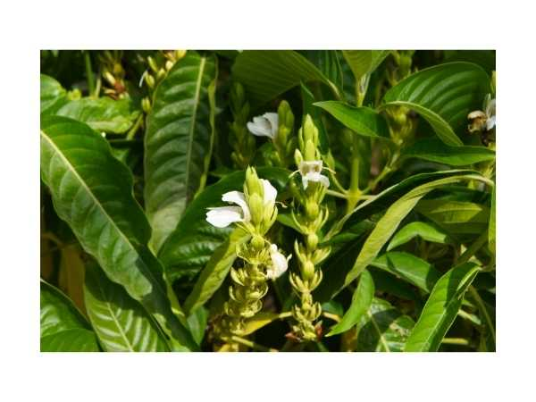
Adathodai / Malabar Nut
Justicia adhatoda
Medicinal shrub used for asthma, bronchitis, and respiratory conditions in Siddha and Ayurveda.
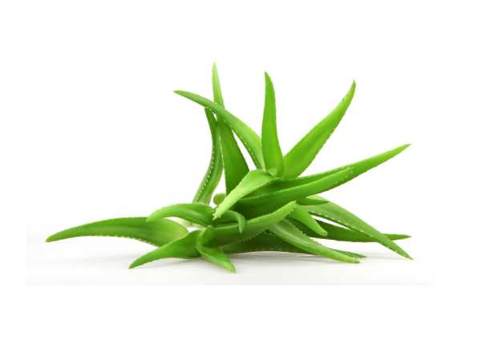
Aloe Vera
Aloe vera
Succulent herb with gel-filled leaves used for burns, skin conditions, and digestive health.
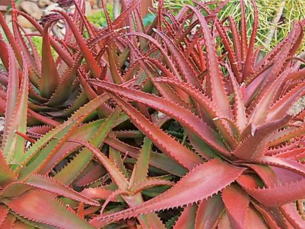
Aloe Vera - Red
Aloe cameronii
Ornamental red aloe that turns vivid red in full sun; similar medicinal properties to Aloe vera.
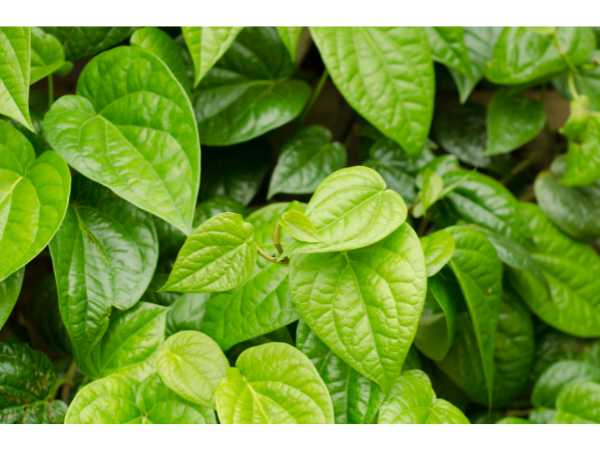
Betel Leaf
Piper betle
Sacred climbing vine with aromatic heart-shaped leaves used in traditional ceremonies and medicine.
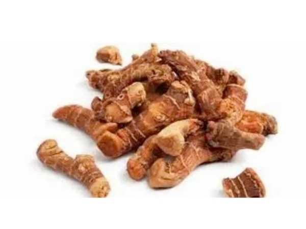
Chitharathai / Lesser Galangal
Alpinia officinarum
Aromatic rhizome used in Siddha medicine for indigestion, flatulence, and respiratory infections.
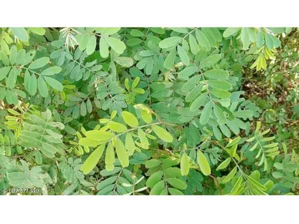
Elumbu Otti Ilai / Bone Joint Leaves
Mukia maderaspatana
Climbing herb whose leaves are applied as poultice for bone fractures and joint pain.
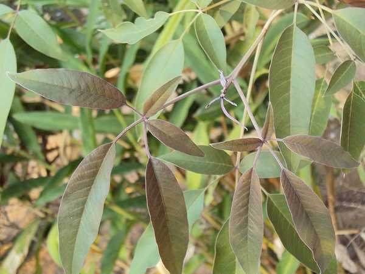
Karunochi / Chaste Tree
Vitex negundo
Aromatic shrub used in Siddha and Ayurveda for joint pain, fever, and headache.
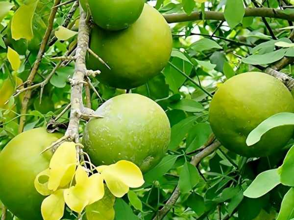
Maha Vilvam / Bael
Aegle marmelos
Sacred bael tree; fruit used for digestive disorders and dysentery; leaves offered in Hindu worship.
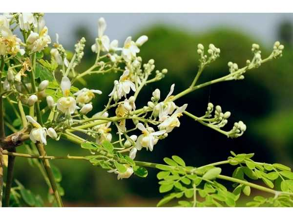
Moringa Tree
Moringa oleifera
Fast-growing nutritional powerhouse known as the drumstick tree.

Murungai - Kalyana / Indian Coral Tree
Erythrina variegata
Coral tree with brilliant scarlet flowers; bark and leaves used for joint pain and skin diseases.
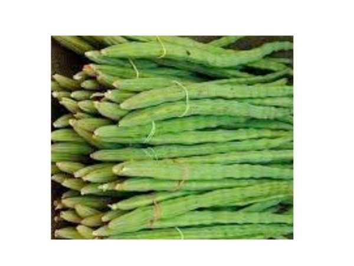
Murungai - Karumbu / Drumstick Tree
Moringa oleifera
Dark-stem Moringa variety; all parts edible and medicinal; highly nutritious leaves and pods.
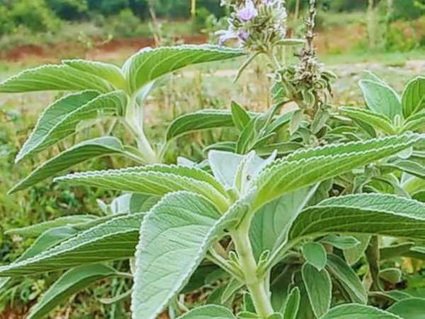
Pei Mirati
Anisomeles malabarica
Aromatic medicinal herb from the mint family used in Siddha medicine for fever and inflammation.
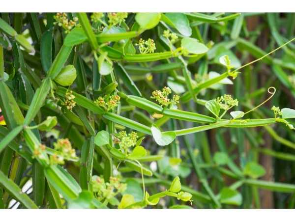
Pirandai
Cissus quadrangularis
Succulent climber with four-angled stems; used for bone fractures, joint pain, and digestive issues.

Poonai Meesai / Java Tea
Orthosiphon aristatus
Herb with cat-whisker flowers; widely used as a diuretic and for kidney stones in traditional medicine.

Ranakalli
Kalanchoe pinnata
Succulent herb that propagates from leaf margins; used for wounds, burns, and kidney stones.
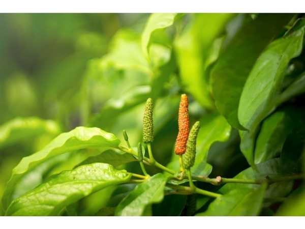
Thippili / Indian Long Pepper
Piper longum
Climbing shrub with pungent fruits; key ingredient in Trikatu; used for respiratory and digestive conditions.

Vasambu / Sweet Flag
Acorus calamus
Aromatic rhizome used in Siddha medicine for digestive issues, speech disorders, and memory enhancement.

Vathanarayanan / Peacock Flower
Caesalpinia pulcherrima
Ornamental shrub with showy orange-red flowers; bark and leaves used in traditional medicine for fever.

Vetiver / Cuscus Grass
Chrysopogon zizanioides
Deep-rooted aromatic grass; roots used for cooling, fever, and skin conditions; used in perfumery.